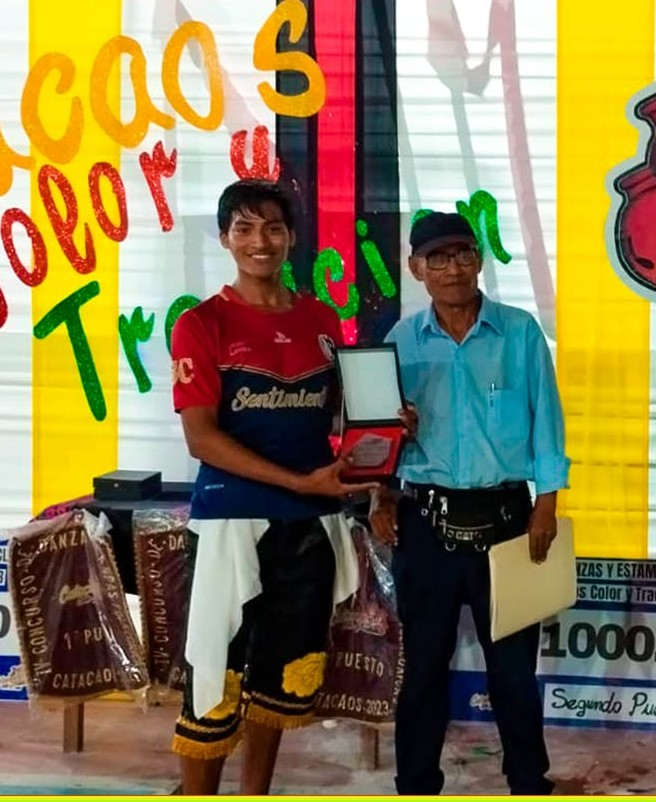
🏅 Mejor Danzante Masculino
Bryan Suarez Alvarez
A.F. Sentimiento y Corazón
Después de tres años, el concurso volvió a los escenarios reuniendo a agrupaciones de la región en una edición marcada por el reencuentro y el crecimiento.
22 de octubre de 2023
Catacaos, Piura
14 agrupaciones
General
Una mirada general a los hechos más importantes de esta edición.
La cuarta edición de Catacaos, Color y Tradición se realizó el 22 de octubre de 2023 en el Coliseo Eriberto Pirilo Gómez de Catacaos, marcando el esperado regreso del concurso a su formato presencial.
Después de la edición virtual del 2020, el público y las agrupaciones volvieron a reencontrarse en una jornada llena de color, energía y tradición.
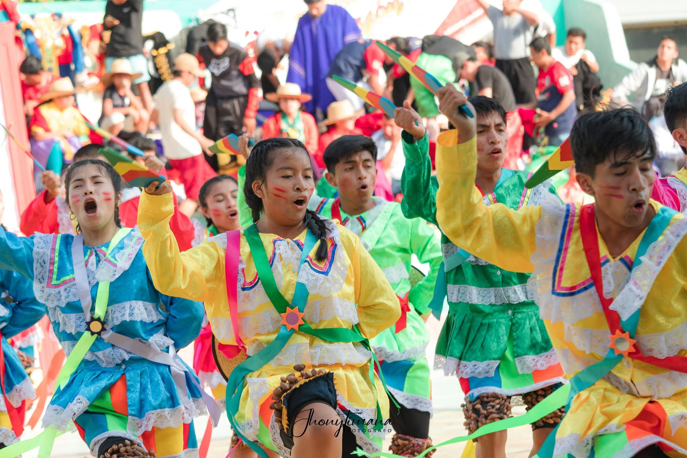
En esta edición participaron 14 agrupaciones folclóricas, presentando un total de 20 danzas en competencia.
Las presentaciones fueron distribuidas en tres grupos: A, B y C. De cada grupo clasificaron las tres mejores danzas, formando una gran final con 9 presentaciones.

La final fue una de las más reñidas de la historia del concurso. Sentimiento y Corazón y Perú Ritmo y Color alcanzaron la máxima puntuación, logrando ambos el primer lugar.
Esta edición también destacó por el alto nivel competitivo, el crecimiento del concurso y el entusiasmo del público en el regreso a la presencialidad.
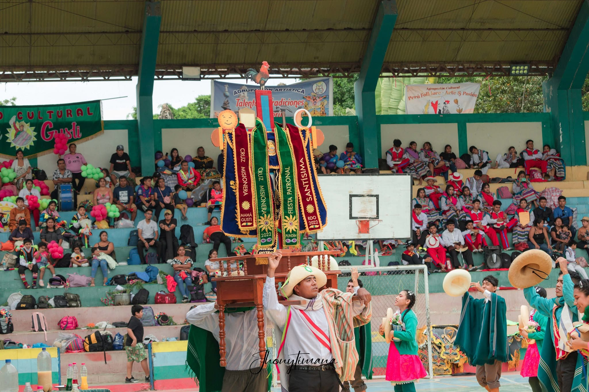

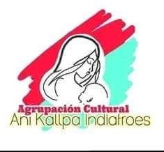

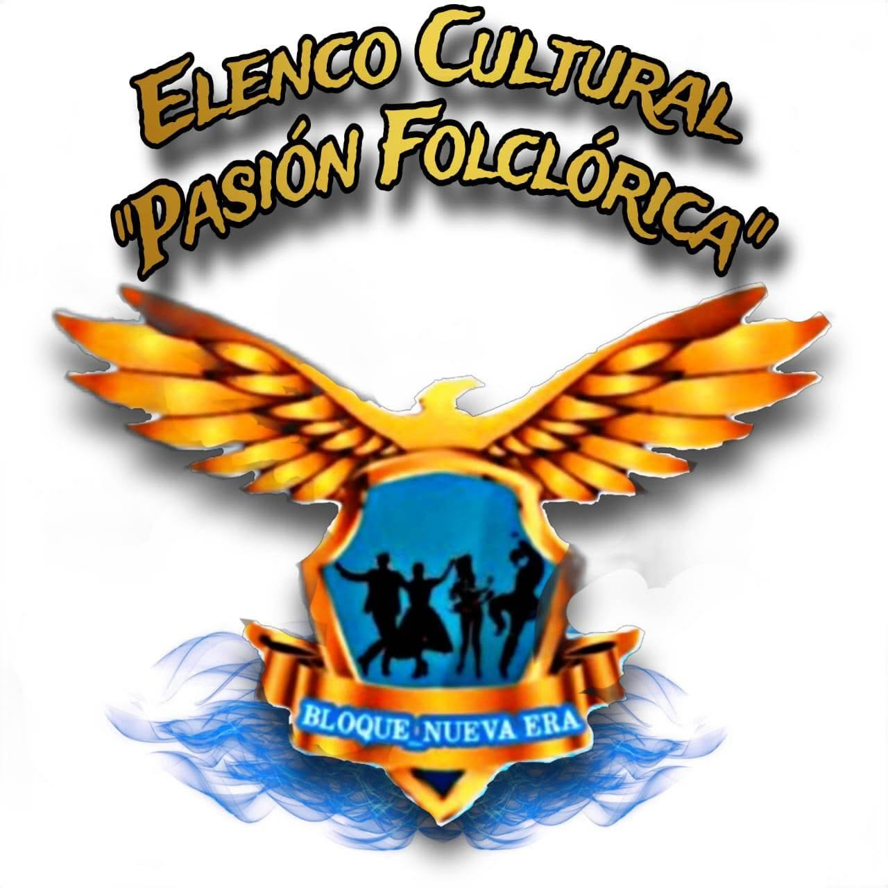

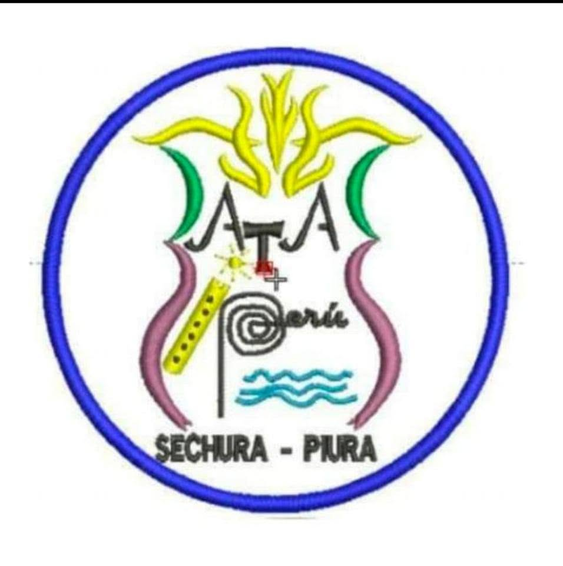

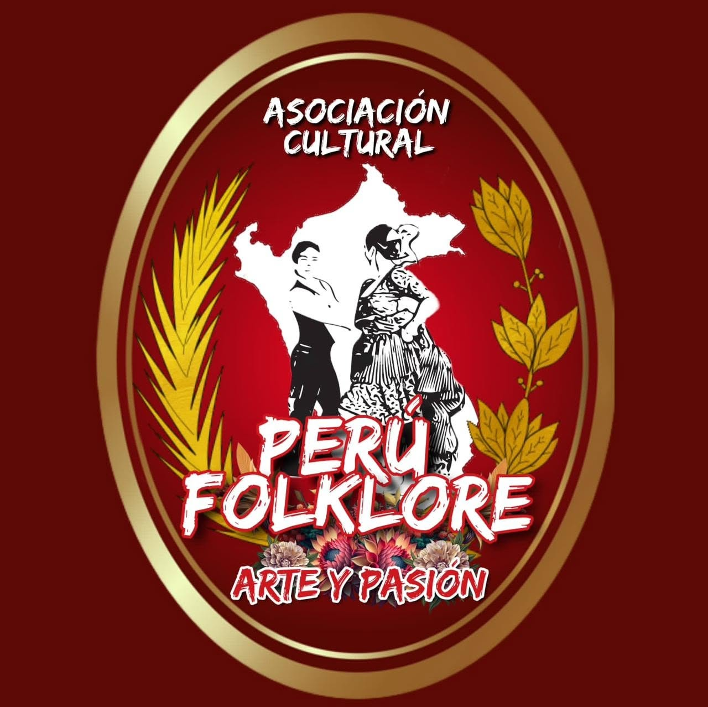
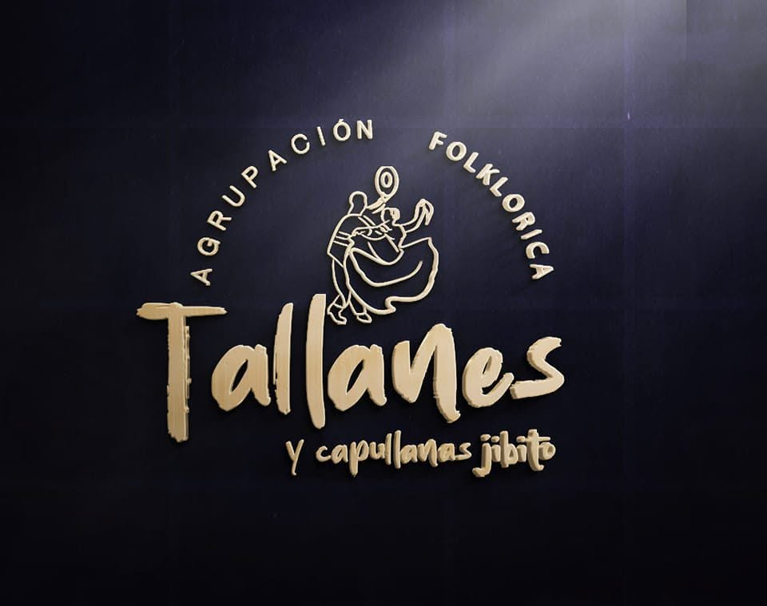
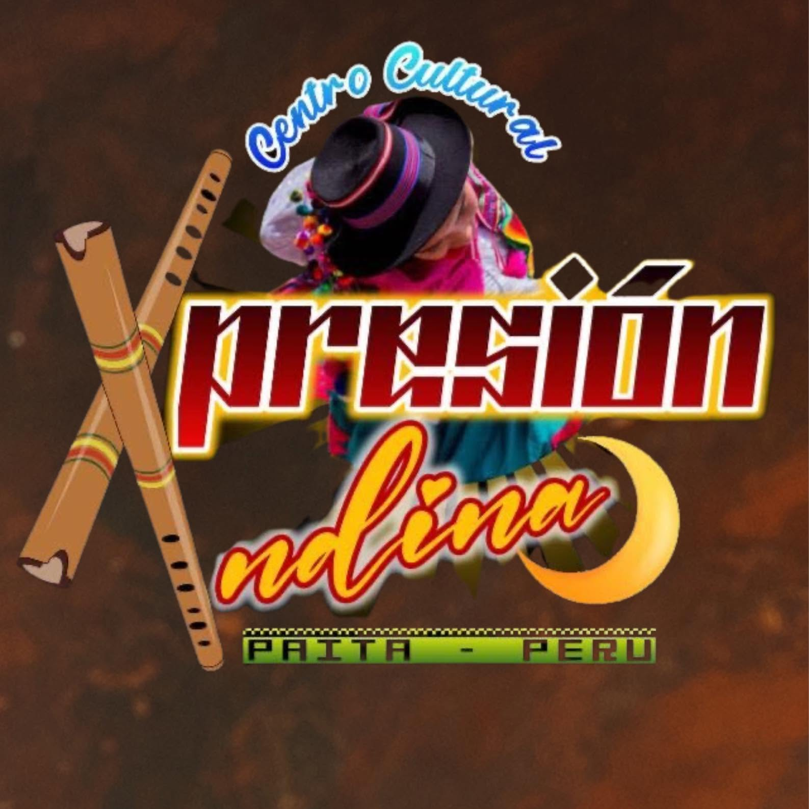
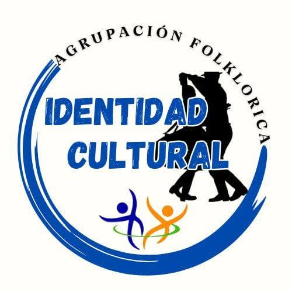
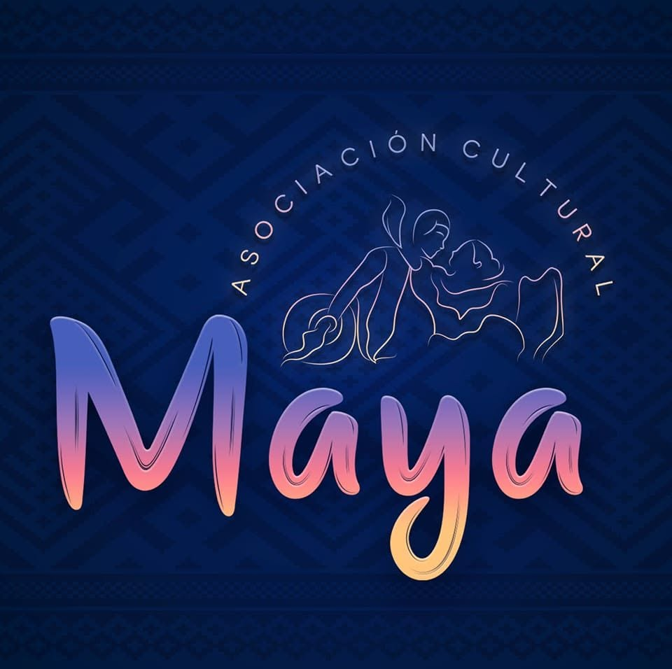
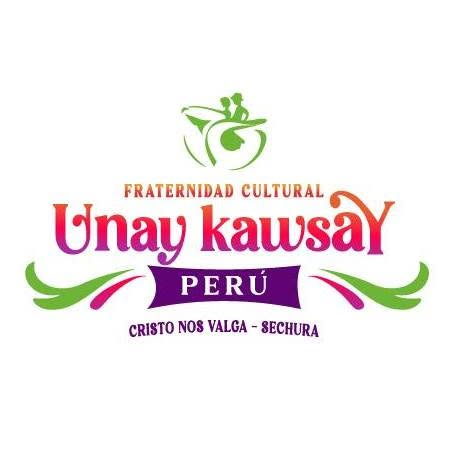
| Agrupación | Danza | J1 | J2 | J3 | Total |
|---|---|---|---|---|---|
| Pasión Folclórica | Fiesta Patronal de Huanchi | 84 | 84 | 82 | 250 |
| Waynakay Tusuy | Carnaval Huaytarino | 82 | 83 | 81 | 246 |
| Perú Ritmo y Color | Diablicos de Huancabamba | 86 | 86 | 86 | 258 |
| Mamá Gusti | Fiesta Patronal de Pundín | 84 | 85 | 84 | 253 |
| Expresión Andina | Carnaval de Congalla | 85 | 86 | 84 | 255 |
| Sentimiento y Corazón | Diablicos de Huancabamba | 85 | 87 | 86 | 258 |
| Talentos y Tradiciones del Perú | Contradanza | 85 | 83 | 84 | 252 |
| Agrupación | Danza | J1 | J2 | J3 | Total |
|---|---|---|---|---|---|
| Waynakay Tusuy | Carnaval de Santiago de Chocorvos | 84 | 83 | 83 | 250 |
| Perú Folklore | Camile de Coporaque | 85 | 85 | 85 | 255 |
| Unay Kawsay Perú | Waca Waca | 83 | 83 | 83 | 249 |
| Tallanes y Capullanas Jibito | Contradanza | 82 | 82 | 83 | 247 |
| Mamá Gusti | Carnaval de Socos | 86 | 87 | 86 | 259 |
| Sentimiento MG | Llamichus de Chuñuq | 83 | 83 | 83 | 249 |
| Pasión folcórica | Torollay Pukllay | 84 | 84 | 84 | 252 |
| Agrupación | Danza | J1 | J2 | J3 | Total |
|---|---|---|---|---|---|
| Identidad Cultural | Carnaval de Umapata | 82 | 82 | 83 | 247 |
| Sentimiento y Corazón | Turcos de Marcabal | 84 | 85 | 86 | 255 |
| Maya | Carnaval de Santiago de Chocorvos | 86 | 86 | 85 | 257 |
| Talentos y Tradiciones del Perú | Diablada Puneña | 85 | 84 | 86 | 255 |
| Ani Kallpa Indiafroes | Carnaval de Huanupampa | 86 | 86 | 85 | 257 |
| Expresión Andina | Carnaval de Socos | 85 | 85 | 84 | 254 |
| N° | Agrupación | Danza | J1 | J2 | J3 | Total | Prom. |
|---|---|---|---|---|---|---|---|
| 1 | Talentos y Tradiciones del Perú | Diablada Puneña | 92 | 93 | 93 | 278 | 92.67 |
| 2 | Expresión Andina | Carnaval de Congalla | 94 | 94 | 94 | 282 | 94.00 |
| 3 | Ani Kallpa Indiafroes | Carnaval de Huanupampa | 95 | 96 | 94 | 285 | 95.00 |
| 4 | Mamá Gusti | Carnaval de Socos | 96 | 96 | 96 | 288 | 96.00 |
| 5 | Maya | Carnaval de Santiago de Chocorvos | 96 | 95 | 94 | 285 | 95.00 |
| 6 | Perú Ritmo y Color | Diablicos de Huancabamba | 97 | 97 | 97 | 291 | 97.00 |
| 7 | Sentimiento y Corazón | Diablicos de Huancabamba | 97 | 97 | 97 | 291 | 97.00 |
| 8 | Pasión Folclórica | Torollay Pukllay | 94 | 95 | 94 | 283 | 94.33 |
| 9 | Perú Folklore | Camile de Coporaque | 95 | 95 | 95 | 285 | 95.00 |
Esta edición registró un empate en el primer lugar, por lo que no se otorgó un segundo puesto.
🥇 Primer Lugar
🥇 Primer Lugar
🥉 Tercer Lugar

A.F. Sentimiento y Corazón
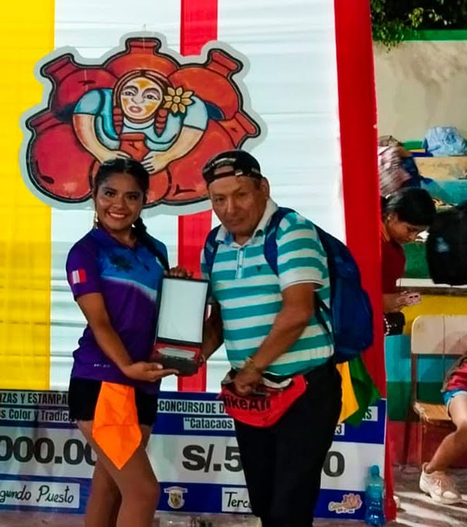
A.A. Talentos y Tradiciones del Perú
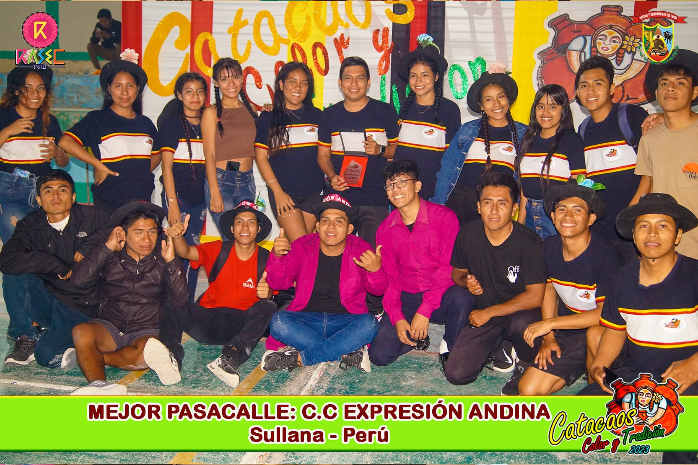
Reconocimiento al mejor pasacalle de la edición.
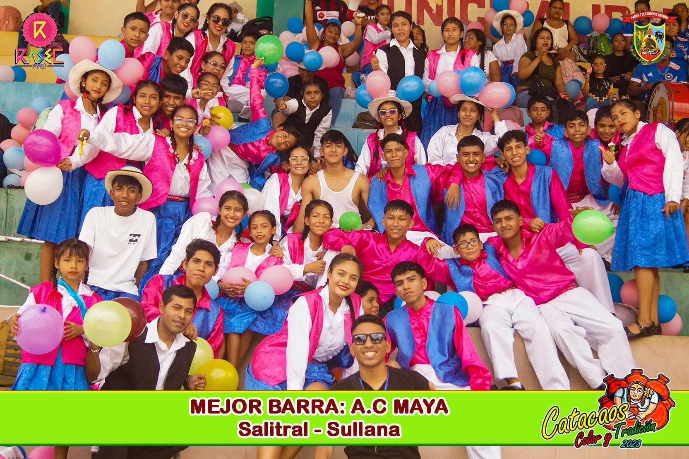
Reconocimiento al entusiasmo y euforia.
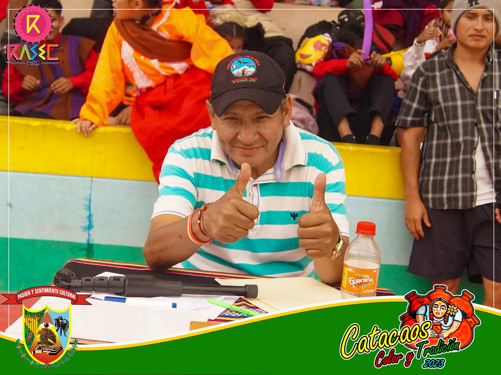
Jurado 1
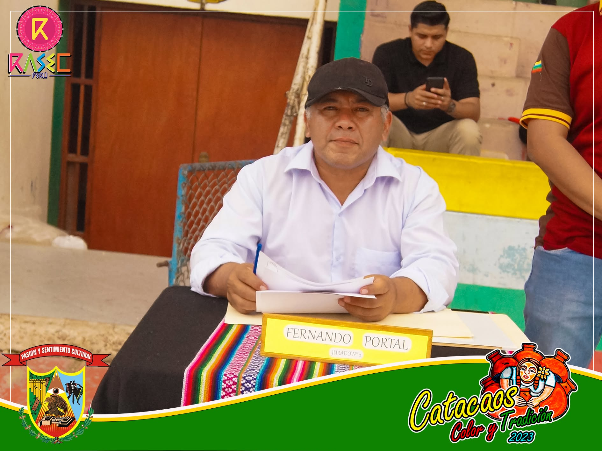
jurado 2
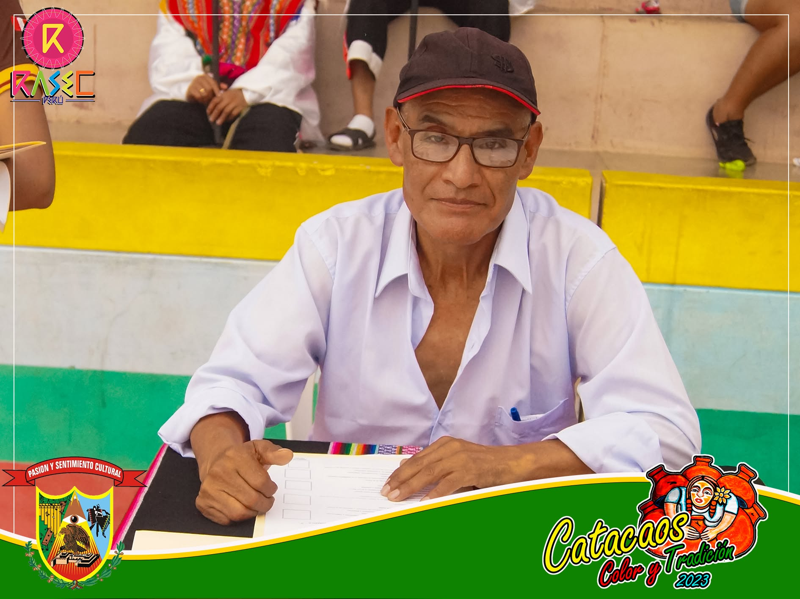
jurado 3
Pequeños detalles que hicieron especial esta edición.
Después de tres años, el concurso volvió a realizarse de forma presencial, reuniendo nuevamente a agrupaciones y público en Catacaos.
Diez agrupaciones participaron por primera vez en el concurso, convirtiéndose en la edición con mayor cantidad de debutantes.
Sentimiento y Corazón y Perú Ritmo y Color consiguieron su primer título tras empatar en el primer lugar.
Debido al empate por el campeonato, no se otorgó el segundo lugar, una situación inédita en la historia del concurso.
Sentimiento y Corazón volvió a obtener el reconocimiento al Mejor Danzante Masculino.
Por primera vez una agrupación proveniente de Talara, Waynakay Tusuy, participó en Catacaos, Color y Tradición.
La participación de Sentimiento MG, agrupación infantil, motivó a la organización a considerar la creación de una categoría infantil para la siguiente edición.
Con 14 agrupaciones, fue la edición presencial con mayor número de participantes hasta ese momento.
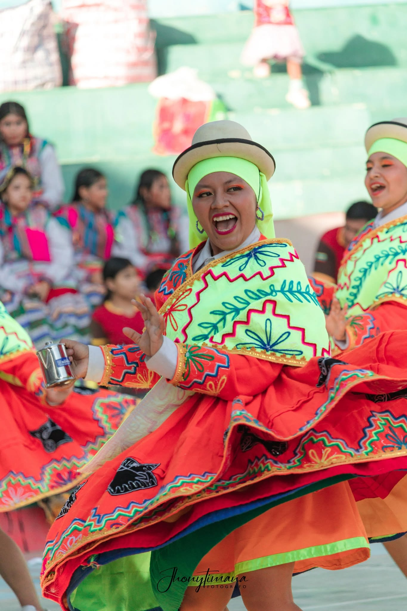
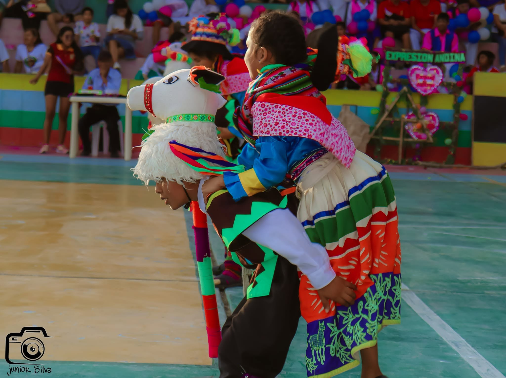
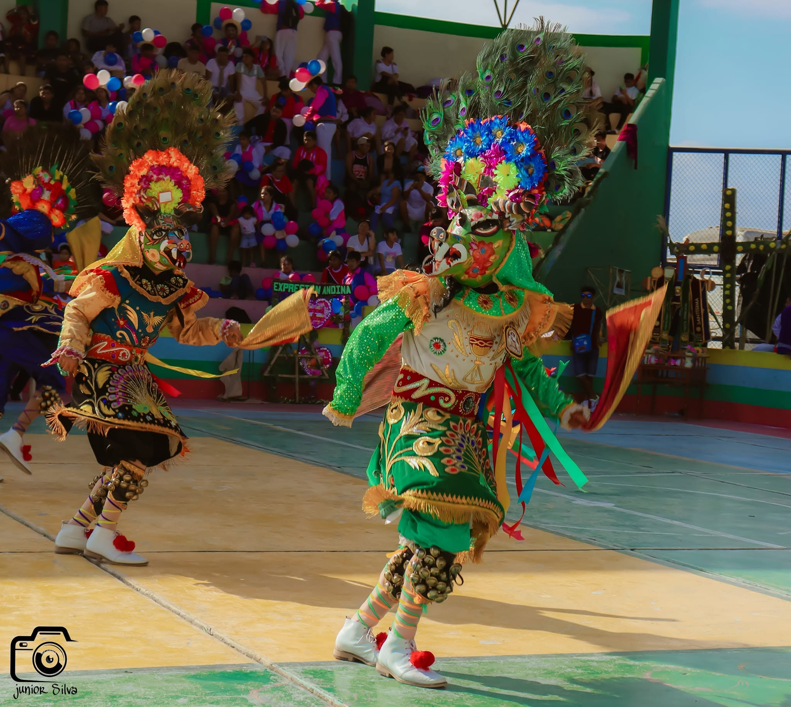
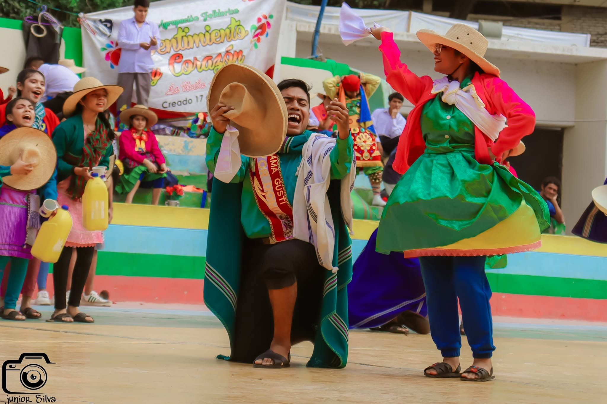
Presentaciones, resumen oficial y momentos destacados.
La Productora no subió los video completos ni nos envió las fotos. 🥹